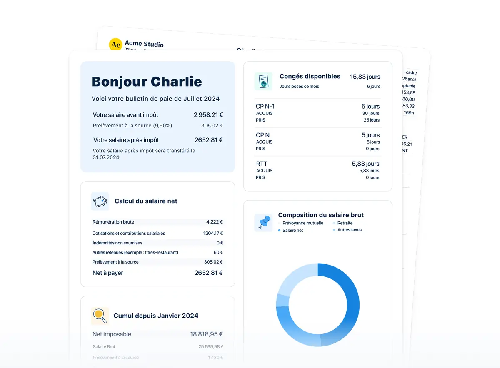
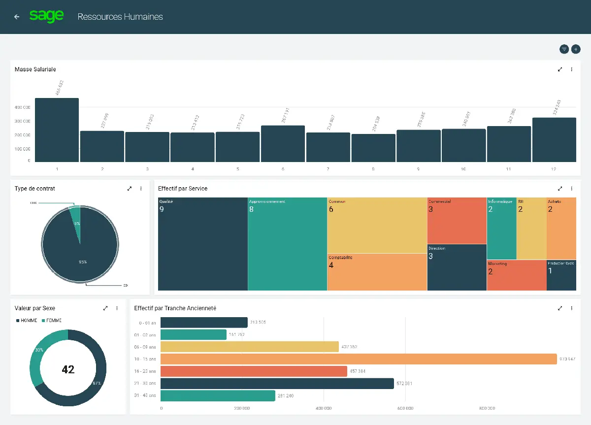
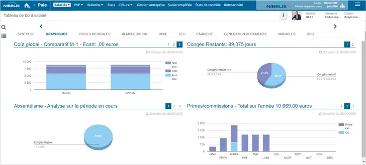

En bref
Silae reste le moteur de paie de reference en France, utilise par plus de 30 000 cabinets comptables. Mais entre les hausses de prix de 2024, l'interface qui accuse son age et l'absence de SIRH integre, de plus en plus d'entreprises cherchent une solution differente. Voici les 5 meilleures alternatives selon votre situation.
- PayFit : paie automatisee sans expertise, ideale pour les TPE/PME
- Sage Paie : l'alternative historique pour les PME etablies
- Cegid : plateforme HCM complete pour ETI et grands groupes
- Nibelis : externalisation paie haut de gamme avec gestionnaire dedie
- Factorial : SIRH complet avec paie integree pour PME modernes
Pourquoi chercher une alternative a Silae ?
Silae domine le marche francais de la paie depuis des annees. Son moteur de calcul gere plus de 400 conventions collectives, le multi-societes, les cas complexes (intermittents, expatries, multi-etablissements) et la DSN. C'est l'outil de reference pour les gestionnaires de paie et les cabinets comptables.
Pourtant, en 2026, plusieurs facteurs poussent les entreprises a regarder ailleurs :
- Hausses tarifaires de 2024 : certaines licences ont augmente de 50 a 100%, sans amelioration visible de l'interface ou des fonctionnalites. Beaucoup d'utilisateurs ont decouvert les nouveaux tarifs au moment du renouvellement, sans preavis suffisant.
- Interface vieillissante : l'ergonomie de Silae n'a pas evolue au meme rythme que les pure players SaaS. La navigation reste complexe, et les collaborateurs (hors gestionnaires paie) trouvent le portail My Silae peu intuitif.
- Absence de SIRH integre : Silae est un moteur de paie, pas un SIRH. Pas de gestion des entretiens, de la formation, du recrutement ou des competences. Il faut ajouter un outil tiers pour couvrir ces besoins.
- Dependance a un integrateur : la mise en place, le support et souvent la facturation passent par un cabinet comptable ou un integrateur. Cela ajoute une couche de complexite et peut rallonger les delais de resolution des problemes.
- Besoin de simplicite : pour les PME de moins de 100 salaries avec une paie relativement standard, la puissance de Silae est souvent surdimensionnee par rapport a leurs besoins reels.
Si vous vous retrouvez dans l'une de ces situations, notre guide pour choisir son logiciel de paie detaille les criteres a analyser avant de se lancer.
Tableau comparatif des alternatives a Silae
Ce tableau resume les caracteristiques cles des 5 alternatives face a Silae. Chaque solution repond a un profil different, du plus simple au plus complet.
| Critere | Silae | PayFit | Sage Paie | Cegid | Nibelis | Factorial |
|---|---|---|---|---|---|---|
| Moteur paie natif | Oui | Oui | Oui | Oui | Oui | Oui |
| Conventions collectives | 400+ | 350+ | 300+ | 400+ | Toutes | 200+ |
| Multi-societes | Oui | Non | Oui | Oui | Oui | Non |
| SIRH integre | Non | Basique | Non | Oui | Non | Oui |
| App mobile | Non | Oui | Non | Oui | Non | Oui |
| Mode expert paie | Oui | Non | Oui | Oui | N/A (externalise) | Non |
| Prix / salarie / mois | Sur devis | 6-9 euros | 7-12 euros | 10-20 euros | 15-25 euros | 5-8 euros |
| Cible ideale | Cabinets, multi-CCN | TPE/PME <50 | PME etablies | ETI/grands groupes | ETI 100+ externalisation | PME 20-300 |
1. PayFit : la paie automatisee tout-en-un
PayFit en resume
PayFit prend le contre-pied de Silae : la ou Silae mise sur la puissance et le paramétrage fin, PayFit mise sur la simplicite radicale. Pas besoin d'etre gestionnaire de paie pour l'utiliser. La paie se lance en quelques clics, la DSN part automatiquement, et les bulletins sont generes sans intervention manuelle. C'est la solution qui a democratise la paie en libre-service pour les dirigeants de TPE.
| Critere | Detail |
|---|---|
| Prix | 6 a 9 euros par salarie par mois selon la formule |
| Cible | TPE/PME de moins de 50 salaries sans gestionnaire paie |
| Paie | 100% automatisee, DSN native, zero expertise requise |
| Deploiement | 1 a 2 semaines |
| Support | Chat, email, centre d'aide en ligne |
Points forts
- Mise en place la plus rapide du marche (1 a 2 semaines)
- Zero expertise paie requise pour produire les bulletins
- Interface moderne et intuitive, app mobile
- DSN generee et envoyee automatiquement
Points faibles
- 350 conventions collectives seulement (vs 400+ chez Silae)
- Pas de multi-societes
- Pas de mode expert pour gestionnaires paie experimentes
- Limites au-dela de 50 salaries (tarifs, fonctionnalites)

Ideal si : vous etes une TPE ou PME de moins de 50 salaries, sans gestionnaire de paie dedie, et vous voulez produire vos bulletins sans vous former a la paie. Consultez notre comparatif PayFit vs Silae pour un face-a-face complet.
2. Sage Paie : l'alternative historique
Sage Paie en resume
Sage Paie est present sur le marche francais depuis plus de 30 ans. Son moteur de paie a fait ses preuves dans des milliers de PME, de cabinets comptables et de structures industrielles. Avec la version cloud Sage Business Cloud Paie, l'editeur modernise son offre tout en conservant la robustesse du calcul paie qui a bati sa reputation.
Pour les entreprises deja dans l'ecosysteme Sage (comptabilite, gestion commerciale, CRM), c'est l'option la plus naturelle. L'integration entre les modules se fait nativement, sans connecteur tiers a parametrer.
| Critere | Detail |
|---|---|
| Prix | 7 a 12 euros par salarie par mois (cloud) ou licence on-premise |
| Cible | PME etablies, deja dans l'ecosysteme Sage |
| Paie | Moteur de paie eprouve, 300+ conventions collectives |
| Deploiement | 4 a 8 semaines |
| Support | Telephone, email, partenaires certifies |
Points forts
- Moteur de paie fiable et eprouve depuis 30+ ans
- 300+ conventions collectives gerees
- Integration native avec l'ecosysteme Sage (compta, CRM)
- Option on-premise ou cloud selon vos contraintes
Points faibles
- Interface datee, moins ergonomique que les pure players SaaS
- Cout total eleve (licence + maintenance + formation)
- Courbe d'apprentissage importante
- Pas de SIRH integre dans la version paie

Ideal si : vous utilisez deja Sage pour votre comptabilite ou gestion commerciale et cherchez une paie robuste qui s'integre nativement avec vos outils existants.
3. Cegid : la solution ETI et grands comptes
Cegid en resume
Cegid HR Ultimate s'adresse aux entreprises de 250 a 10 000+ salaries qui ont besoin d'une plateforme HCM (Human Capital Management) complete. La ou Silae excelle sur la paie pure, Cegid couvre l'ensemble du cycle RH : paie, gestion administrative, talents, formation, recrutement, reporting avance.
C'est un choix frequent pour les ETI francaises en croissance qui veulent consolider paie et RH dans un seul outil, avec un reporting unifie pour la direction. Le positionnement est clairement haut de gamme, ce qui se reflete dans les tarifs.
| Critere | Detail |
|---|---|
| Prix | Sur devis (generalement 10 a 20 euros par salarie par mois) |
| Cible | ETI et grands groupes de 250+ salaries |
| Paie | Moteur de paie complet, 400+ conventions, multi-pays |
| Deploiement | 8 a 16 semaines |
| Support | Chef de projet dedie, support premium |
Points forts
- Perimetre fonctionnel tres large (paie + RH + talents)
- Multi-societes et multi-pays natifs
- Reporting avance et BI integree
- Conformite internationale
Points faibles
- Complexite de mise en oeuvre (8 a 16 semaines)
- Prix eleve, peu adapte aux PME de moins de 200 salaries
- Interface moins moderne que les pure players SaaS
- Necessite souvent un integrateur pour le deploiement
Ideal si : vous etes une ETI ou un grand groupe (250+ salaries) avec des besoins multi-societes ou multi-pays, et vous voulez une plateforme HCM complete pour unifier paie et gestion des talents.
4. Nibelis : l'externalisation paie haut de gamme
Nibelis en resume
Avec Nibelis, le modele change completement. Vous ne produisez plus la paie en interne : un gestionnaire dedie s'occupe de tout, des variables de paie aux bulletins, en passant par la DSN et les declarations sociales. C'est de l'externalisation paie au sens strict, avec une responsabilite partagee sur la conformite.
Ce modele convient particulierement aux ETI de 100 salaries et plus qui n'ont pas de service paie structure ou qui veulent liberer leurs equipes RH pour se concentrer sur des sujets a plus forte valeur ajoutee.
| Critere | Detail |
|---|---|
| Prix | 15 a 25 euros par salarie par mois tout compris |
| Cible | ETI de 100+ salaries souhaitant externaliser la paie |
| Paie | Externalisee : Nibelis produit les bulletins et gere la DSN |
| Deploiement | 6 a 12 semaines |
| Support | Gestionnaire paie dedie, hotline |
Points forts
- Zero production paie en interne
- Gestionnaire paie dedie et expert
- Couverture de toutes les conventions collectives
- Responsabilite partagee sur la conformite
Points faibles
- Cout eleve (15 a 25 euros/salarie/mois)
- Moins de controle et de reactivite qu'en interne
- Dependance forte au prestataire
- Pas de SIRH integre

Ideal si : vous avez plus de 100 salaries et vous voulez deleguer completement la production paie a des experts. Le budget est plus eleve, mais la tranquillite est totale.
5. Factorial : le SIRH complet avec paie integree
 Factorial en resume
Factorial en resume
Factorial est le SIRH tout-en-un qui a le vent en poupe aupres des PME francaises. Recrutement, onboarding, conges, temps de travail, entretiens annuels, formation : tout est dans un seul outil. Depuis 2024, Factorial propose aussi un module paie France natif, en plus de son connecteur Silae historique.
Pour les entreprises qui quittent Silae parce qu'elles veulent un outil qui fait plus que la paie, Factorial represente probablement le meilleur compromis fonctionnalites/prix du marche. Le tarif reste competitif (5 a 8 euros par salarie par mois) pour un perimetre bien plus large que la paie seule.
| Critere | Detail |
|---|---|
| Prix | 5 a 8 euros par salarie par mois selon la formule |
| Cible | PME de 20 a 300 salaries qui veulent paie + SIRH |
| Paie | Module paie France integre ou connecteur Silae |
| Deploiement | 2 a 4 semaines |
| Support | Chat, email, gestionnaire de compte dedie |
Points forts
- SIRH le plus complet dans cette gamme (recrutement, entretiens, formation, temps)
- Paie France integree depuis 2024
- Application mobile soignee
- Tarif competitif pour le perimetre couvert
Points faibles
- Moteur paie moins mature que Silae
- 200+ conventions collectives seulement
- Pas de mode expert pour gestionnaires paie
- Moins adapte a la paie tres complexe (multi-CCN, expatries)

Ideal si : vous etes une PME de 20 a 300 salaries et vous voulez regrouper paie et SIRH dans un seul outil, avec un budget maitrise. Consultez notre avis PayFit et notre page alternatives a PayFit pour croiser les analyses.
Quelle alternative a Silae est faite pour vous ?
Quiz rapide : trouvez votre alternative ideale
Repondez a 4 questions pour obtenir une recommandation personnalisee en 30 secondes.
1. Quelle est la taille de votre entreprise ?
2. Quel est le niveau de complexite de votre paie ?
3. Avez-vous besoin d'un SIRH en plus de la paie ?
4. Quel budget par salarie et par mois ?
Notre recommandation pour vous :
Comment choisir la bonne alternative ?
Le bon choix depend de trois parametres : la taille de votre entreprise, la complexite de votre paie et votre budget. Voici notre grille de recommandation synthetique.
| Votre profil | Notre recommandation | Pourquoi |
|---|---|---|
| TPE/PME <50, paie simple | PayFit | Mise en place en 1-2 semaines, zero expertise requise, tarif maitrise |
| PME 20-300, besoin SIRH | Factorial | SIRH complet + paie, meilleur rapport fonctionnalites/prix |
| PME deja dans l'ecosysteme Sage | Sage Paie | Integration native Sage (compta, CRM), moteur paie eprouve |
| ETI 250+, multi-societes/multi-pays | Cegid | Plateforme HCM complete avec BI integree, conformite internationale |
| ETI 100+, externalisation souhaitee | Nibelis | Paie externalisee, gestionnaire dedie, zero charge interne |
Avant de vous decider, testez au minimum deux solutions avec vos donnees reelles. La plupart des editeurs proposent une demo ou un essai gratuit. Notre outil de recommandation gratuit peut aussi vous aider a affiner votre choix.
Migration depuis Silae : les 5 etapes cles
Migrer depuis Silae demande un peu plus de preparation que pour un logiciel SaaS classique, car vos donnees transitent souvent par un integrateur. Voici les etapes a suivre.
1. Choisissez le bon timing
Le meilleur moment reste janvier, au debut de l'exercice comptable. Vous repartez avec un historique N-1 propre et evitez les problemes de reprise de cumuls en cours d'annee. Si janvier n'est pas possible, visez un debut de trimestre. Evitez a tout prix novembre-decembre (cloture annuelle, solde de tout compte, primes).
2. Recuperez vos donnees aupres de votre integrateur
Contactez votre cabinet comptable ou votre integrateur Silae pour obtenir l'export complet : fichiers salaries, historique de bulletins, ecritures comptables, historique DSN, parametrage des conventions collectives. Prevoyez au moins 2 a 4 semaines pour cette etape, car certains integrateurs ne sont pas tres reactifs.
3. Prevoyez un double-run de 2 mois minimum
Avec Silae, le double-run est encore plus important qu'avec d'autres outils. Le paramétrage fin des conventions collectives peut generer des ecarts de calcul sur les premiers mois. Comparez bulletin par bulletin pendant au moins 2 cycles de paie complets avant de basculer definitivement.
4. Budgetez la migration
Comptez entre 1 000 et 5 000 euros de frais de migration selon la complexite (nombre de salaries, nombre de CCN, historique a reprendre). Certains editeurs comme PayFit ou Factorial incluent un accompagnement a la migration dans leur offre d'onboarding. Verifiez aussi les conditions de resiliation de votre contrat Silae (preavis, penalites eventuelles).
5. Formez vos equipes
Si vos gestionnaires de paie sont habitues a l'interface Silae, le passage a un outil plus simple (comme PayFit) peut paradoxalement etre desorientant. Prevoyez une journee de formation pour les utilisateurs cles, et designez un referent interne qui sera le point de contact avec le nouvel editeur.
Besoin d'aide pour choisir ?
Notre outil gratuit analyse votre situation en 8 questions et vous recommande le logiciel ideal en 2 minutes.
Trouver mon logiciel